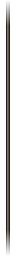
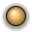

Clavier double stick : split keyboard
Fenêtre 600 × 400, même habillage que la daisywheel. Zone des touches 584 × 220 : deux moitiés de 286 séparées par une gouttière de 12, touches de 54 × 50 au pas de 58, colonnes alignées sur toutes les rangées. Les touches sont des nine-slices 128 × 64 à coins de 12.
{{ rw.label }}
600
Dire :
{{ st.input }}
{{ st.mode }}
LB
lfmheysaluttuslt
RB


/s
/y/p/ra/g/1/w/r
!
{{ h.g }}
{{ st.title }}
{{ st.desc }}
Géométrie de la zone des touches (largeurs en px)
 {{ k.label }}
{{ k.label }}
Rangées à y = 4, 58, 112, 166 ; hauteur 50 ; pas horizontal 58. Points bleus : centres des moitiés (143, 110) et (441, 110), position du curseur stick relâché. Maj = 1 unité et Retour = 2 unités pour garder les colonnes alignées (la demande de 1,5 + 4 touches dépasse les 286 d'une moitié).
moitié G · 286
12
moitié D · 286
{{ gr.label }}
{{ l.k }}
{{ l.v }}
Textures, splitkb/textures

{{ t.name }}
{{ t.desc }}